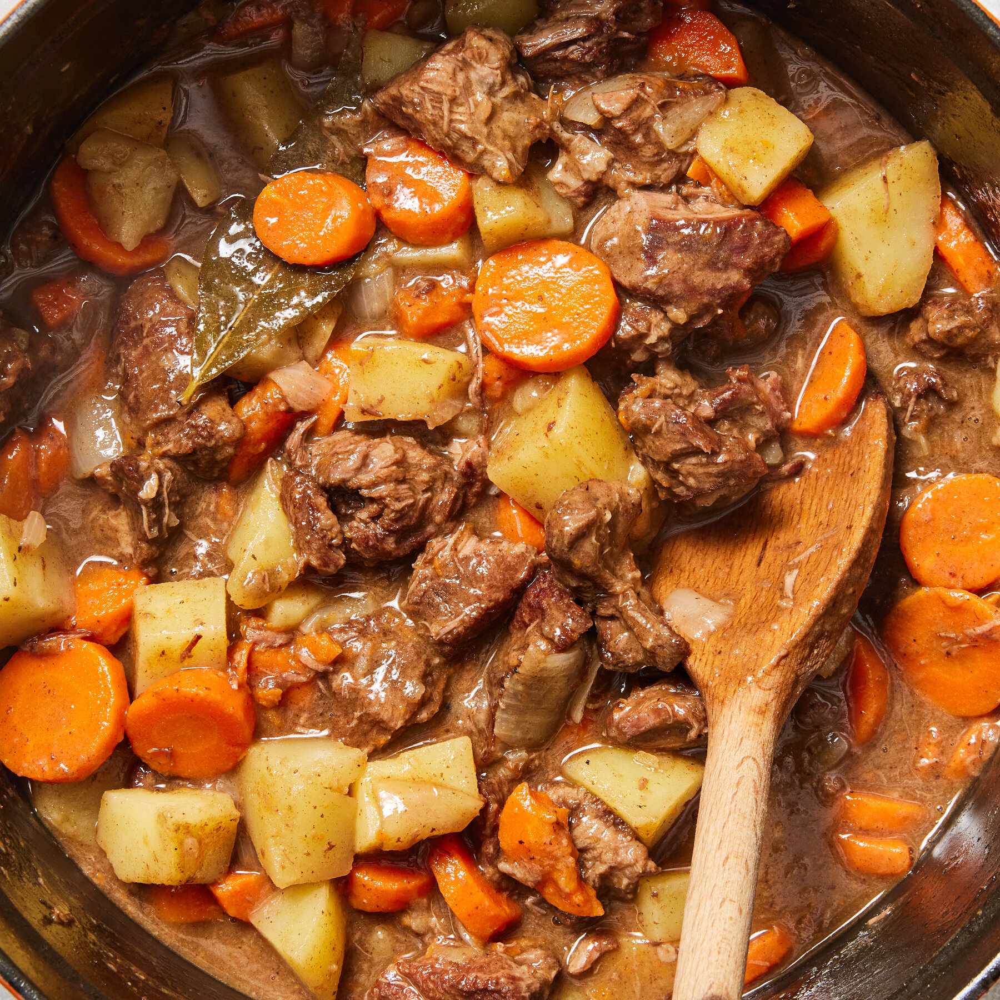

Beef Stew

Slow Cooker Beef Stew
A delicious and easy to make beef stew recipe! Just prep the ingredients, mix them together in your slow cooker, and then let it slowly cook throughout the day!
Ingredients
- 2 pound beef stew meat, cut into 1-inch pieces
- 0.25 cup all-purpose flour
- 0.5 teaspoon salt
- 0.5 teaspoon ground black pepper
- 1.5 cups beef broth
- 4 medium carrots, sliced
- 3 medium potatoes, diced
- 1 medium onion, chopped
- 1 stalk celery, chopped
- 1 teaspoon Worcestershire sauce
- 1 teaspoon ground paprika
- 1 clove garlic, minced
- 1 large bay leaf
Steps
- Gather all ingredients.
- Place beef in the slow cooker.
- Mix flour, salt, and pepper together in a small bowl; pour over beef and stir until coated.
- Add beef broth, carrots, potatoes, onion, celery, Worcestershire sauce, paprika, garlic, and bay leave; stir to combine.
- Cover, and cook until beef is tender enough to cut with a spoon, on Low for 8 to 12 hours, or on High for 4 to 6 hours.
- Serve hot and enjoy!
Home